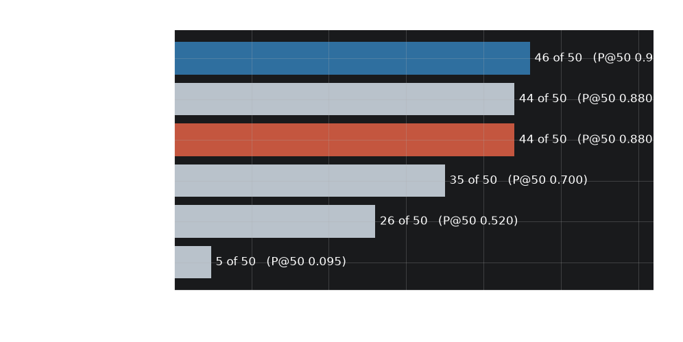
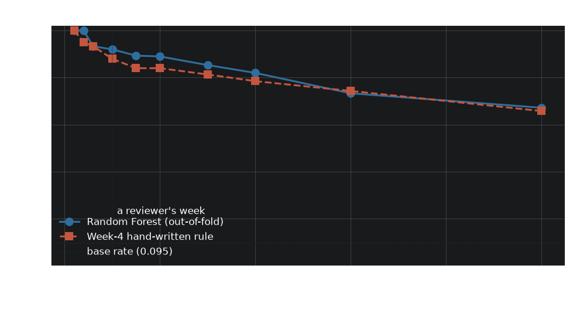
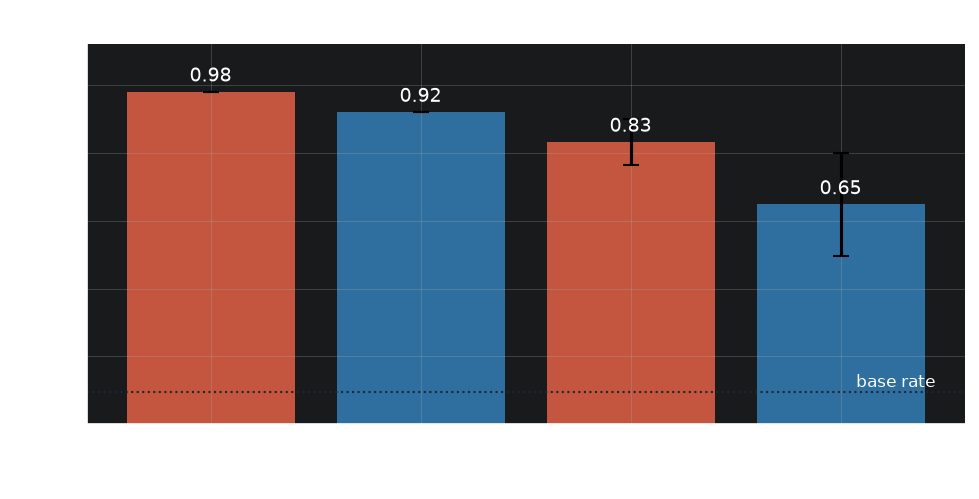
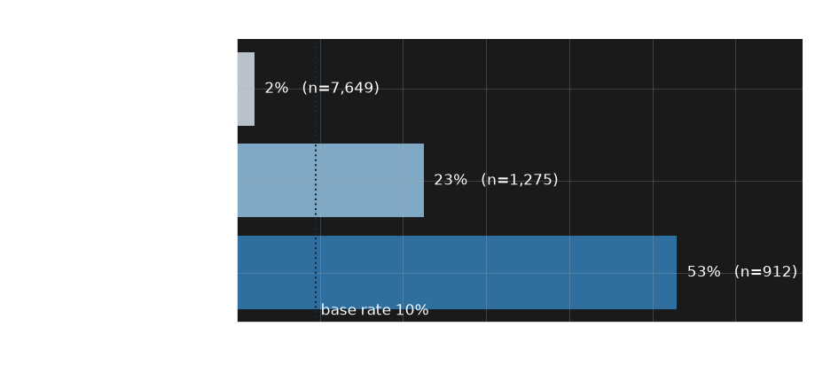
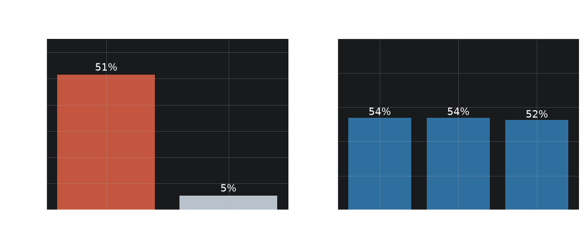

Abstract
FlyRank is an SEO content agency producing and managing content — much of it AI-assisted — across dozens of client portfolios at once, where a content reviewer has roughly 50 slots a week to open pages by hand against a shared portfolio of tens of thousands, and before this work that order was set by client priority and whoever asked most recently rather than by any measured signal. Using an anonymized 30,000-row slice of FlyRank search-performance data (9,836 pages across 28 clients, two consecutive 30-day windows), I defined the outcome as a persisting click shortfall — a page still earning under half its position band's typical click-through rate one window later — and ranked pages by four models plus the transparent hand-written rule built in Week 4, scored out-of-fold under a client-grouped split because one client holds 40% of the data. The learned ranking put 46 of 50 reviewer slots on a page whose shortfall persisted, against 44 for the hand-written rule and 5 for random order (precision@50 of 0.92, 0.88 and 0.095 respectively). Counted per fold rather than pooled the model and the rule sit within one standard deviation of each other, so the honest claim is not worse than the rule, plausibly somewhat better — and a plain random split would have reported 0.98 instead, which is the more useful finding. The output is decision-support for ordering a human review queue in one portfolio over one pair of windows: it does not predict search rankings, does not estimate the value of a fix, and cannot support any causal claim about content changes.
1 · IntroductionThe queue existed. The evidence behind its order did not.
The FlyRank content problem, concretely. FlyRank writes and maintains search content for dozens of clients at once, much of it produced with AI assistance and reviewed by a small human team. That combination — many clients, a large shared page count, and a chronically scarce review resource — is exactly where an unmeasured priority queue costs the most: a reviewer cannot personally track tens of thousands of pages across dozens of accounts, so something has to decide who gets looked at first, and until now that something was informal.
Monday morning, a FlyRank content reviewer opens a list. There are tens of thousands of pages in the portfolio and room for about fifty of them in a week. Which fifty?
Before this work the answer came from client priority and from whoever had asked most recently. That is not a bad process — it is an unmeasured one, and an unmeasured process cannot be improved, defended, or handed off. Two things follow directly from that shape of problem: the queue has to work across very different clients without secretly becoming a queue for one of them, and it has to say plainly when it does not know — both become central findings below, not just design constraints. The question this paper answers is narrow on purpose:
Among pages already visible in search, can a learned ranking identify — better than a transparent hand-written rule — the ones whose click shortfall is still there a month later?
Three phrases carry the weight. Already visible: pages ranking 1–20 with enough impressions to measure; pages nobody sees are a ranking problem, not a click-through one. Click shortfall: earning fewer clicks than pages at the same position band typically do — because position dominates click-through rate, comparing a page to its own band is what makes the comparison fair. Still there a month later: a one-month dip is noise; a gap that survives into a second window is what deserves a human's time.
2 · DataA 30,000-row anonymized slice — not the 79-million-row release
This work used data/raw/content_refresh_anonymized.csv: 30,000 rows × 44 columns,
one row per content item per client. The full pseudonymized warehouse release (~79M rows of daily
search performance) exists and is documented in the programme's data dictionary, but it was
not used here, and every number on this page describes the starter slice.
Each row carries static metadata (word count, content type, keyword intent, age, freshness),
90-day totals from Google Search Console and GA4, and two consecutive 30-day windows
(*_prev_30d, *_last_30d) that make the whole design possible: the earlier
window stands for what is knowable at decision time, the later one for the outcome.
On dates: the slice carries none. Windows are relative to export time, so seasonality cannot be examined and no result here is anchored to a calendar period.
On anonymization: clients, content items and queries arrive as opaque hashes. There are no client names, domains, URLs, page titles or raw search queries in the file at all. This work can therefore say what measurable pattern a page had, never what the page was about — a limitation that returns with force in the recommendations.
| Filtering step | Rows | Why |
|---|---|---|
| all rows in the slice | 30,000 | — |
| no position data or position > 20 | 9,744 | band norms undefined; avg_position 0 = missing |
| visible, but under the earlier-window volume floor | 8,737 | < 167 impressions in 30 days -- CTR not measurable |
| eligible at decision time | 11,519 | the queue's candidate pool |
| ...dropped: below the floor in the LATER window | 1,683 | SURVIVORSHIP: outcome not measurable |
| evaluation universe | 9,836 | every number in this paper |
The third exclusion is the uncomfortable one. Pages whose traffic collapsed between the two windows have no measurable outcome and are dropped — 1,683 of them, 15% of the eligible pool. That is survivorship, it is named here rather than buried, and it means every rate on this page describes pages that stayed measurable.
3 · MethodologyThe label is a proxy, the baseline is free, and the split is grouped by client
Assumptions, stated so they can be disagreed with
- Position band is the fair comparison group — a page is judged against the median click-through rate of pages at its own position, not a portfolio average.
- A persisting gap is what deserves attention — a single-window dip is treated as noise.
- The earlier window is a fair stand-in for decision time — with one declared exception below.
- Median, not mean — these click-through distributions are skewed enough that a mean band norm would be dragged by a handful of outliers.
The label — and the ceiling it puts on every claim
persisted_shortfall = 1 when, in the later window, a page still earns under half
the click-through rate typical of its position band, and still has enough impressions for that to
mean something.
This is a defined-rule proxy, not a reviewed outcome. Nobody looked at these pages and judged them worth fixing. The label records that a gap stayed open — never that work would have closed it. No amount of model quality can lift a claim above the label it was trained on.
The baseline that has to be beaten
The Week-4 hand-written rule, run on the earlier window: flag a visible, well-powered page whose click-through rate is under half its band norm, then rank the flagged ones by expected clicks minus actual clicks. It is transparent, needs no fitting and costs nothing. A model that cannot beat it is not worth shipping — and most of this paper's value is in how close that contest turns out to be.
Validation design
GroupKFold(5) grouped on client_id, predictions collected out-of-fold, so
every page is scored by a model that never saw its client. The reason is measured rather than
theoretical: one client holds 40% of the eligible pages. Under a plain random split
that client's pages sit on both sides of every fold and a model can score well by recognising the
client instead of the pattern. Both splits are reported in the next section.
The metric is precision@K with primary K = 50 — one reviewer-week — and the base rate printed beside it every time, because precision@K means nothing without knowing what random order would have given.
Leakage checks that were actually run
- All 23 outcome-window and product-flag columns are banned from the feature set, and the ban is asserted in code for derived columns too — not just for the obvious ones.
- A deliberately planted leaky column was added in the Week-6 audit to confirm the harness can detect a leak, rather than assuming it would.
- One declared contamination:
avg_positionis a 90-day average and the outcome window sits inside those 90 days, so the position band leaks a thin trace of the outcome. It is kept because the baseline uses it too — removing it only for the model would rig the comparison — and the entire model was refit with position removed to measure what the trace is worth. The answer: 0.007 of PR-AUC. Real, bounded, disclosed, not eliminated.
4 · ResultsThe model wins on paper; the free rule is close enough to keep
All rows below are scored on the same pages, the same split and the same metric. The baseline is recomputed in the same run, not quoted from an earlier week.
| Method | P@20 | P@50 | P@100 | ROC-AUC | PR-AUC | P@50 per fold |
|---|---|---|---|---|---|---|
| Base rate (random order) | 0.10 | 0.10 | 0.10 | 0.500 | 0.095 | 0.10 |
| Rule baseline (Week 4) | 0.95 | 0.88 | 0.84 | 0.721 | 0.403 | 0.62 ± 0.15 |
| Logistic Regression | 0.85 | 0.70 | 0.70 | 0.887 | 0.450 | 0.55 ± 0.12 |
| Decision Tree (d=3) | 0.55 | 0.52 | 0.55 | 0.884 | 0.427 | 0.46 ± 0.07 |
| Random Forest | 1.00 | 0.92 | 0.89 | 0.902 | 0.563 | 0.65 ± 0.15 |
| Gradient Boosting | 0.90 | 0.88 | 0.89 | 0.899 | 0.537 | 0.63 ± 0.17 |


The finding worth more than the headline
The same model, scored under a plain random split instead of a client-grouped one, reports a precision@50 of 0.98 instead of 0.92 — and per-fold, 0.83 instead of 0.65. Nothing about the model changed. What changed is that under a random split about 24 of 28 clients appear on both sides of every fold, so the model can recognise the client rather than the pattern. Under the grouped split, zero do.

Measured out-of-fold under a client-grouped split, the learned ranking is directionally ahead of the hand-written rule at a reviewer's weekly K=50 (0.92 vs 0.88 pooled), but that gap sits inside the fold-to-fold spread once counted per client group. The honest claim is not worse than the rule, plausibly somewhat better — not "beats the rule". A plain random split overstates both.
The top two models are likewise separated by less than one standard deviation, and which one leads changes between library versions. This page reports the model selected in Week 5 and names the flip, rather than re-picking a winner after seeing the table.
Where it is wrong, and why those cases are hard
Of the 4 pages the model put in its top 50 that turned out not to have a persisting shortfall, all of them were pages whose click-through rate climbed back toward its band norm on its own between the two windows. These are self-repairing pages, not misread ones — the honest cost of having one window of history to judge from. It is also the phenomenon that makes the next section's finding so consequential.
5 · LimitationsWhat this work cannot claim
Written before a reader can write it, with the number that measures each one attached — because a limitation without a number is a disclaimer, and disclaimers get skipped.
| Limitation | Measured as | What it forbids |
|---|---|---|
| Not causal | no intervention assigned, no control group | cannot say a rewrite produces clicks |
| Proxy label | persisted_shortfall is an author-defined rule | measures a gap staying open, not fixability |
| Client concentration | largest client = 40% of universe, 76% of top 50 | no portfolio-level claim |
| Survivorship | 1,683 pages excluded from the later window (15%) | rates describe pages that stayed measurable |
| Edge is inside the noise | per-fold P@50 sd = 0.151 | 'not worse, plausibly better', not 'beats' |
| Declared contamination | position removed costs 0.008 PR-AUC | bounded and disclosed, not removed |
| One time window | one pair of consecutive 30-day windows, no calendar dates | no seasonality claim |
| Starter slice | 30,000 rows, 28 clients | not the ~79M-row warehouse release |
| Blind to topic and quality | 0 of 16 features carry topic or text | human is the only control |
| Unreliable inputs | cpc=0 on 76%, search_volume=0 on 37%, sessions/click missing on 20% | no monetary figure computed anywhere |
The one-sentence version: this is decision-support for ordering a review queue in one portfolio over one pair of 30-day windows — and it is close enough to a free hand-written rule that the rule remains a legitimate choice.
6 · RecommendationsA review appointment, not an instruction — and a queue with a one-month shelf life
The model decides order. A human-written lookup decides action. Several rows cannot be worked at all until a prior question is answered. That separation matters: FlyRank can rewrite any action below without retraining anything.
Three tiers, each labelled with a measured hit rate
| Tier | Pages | Observed shortfall rate | vs base rate |
|---|---|---|---|
| A - review first | 912 | 53% | 5.6× |
| B - review if slots remain | 1,275 | 23% | 2.4× |
| C - monitor only | 7,649 | 2% | 0.2× |

Archetype → action
Every page gets exactly one archetype, assigned by first match on rules a reviewer can check by eye, and the archetype — not the model — determines the suggested action.
| Archetype | Suggested first action | In top 200 |
|---|---|---|
page_one_snippet_gap | review_title_and_meta | 31 |
page_two_climber | review_title_meta_and_onpage_relevance | 160 |
deep_page_shortfall | relevance_and_internal_link_review | 5 |
thin_informational | check_page_answers_the_query | — |
commercial_intent_review | human_intent_check_before_content_work | — |
navigational_no_action | no_action_remove_from_queue | — |
no_clear_archetype | manual_triage | 4 |
The decay finding — the most operationally important result here
It would be missed entirely by anyone who stopped at precision@K.

Three operational rules follow, each traceable to one of those numbers: rebuild the queue every 30 days; treat a queue older than 45 days as void; and never read a before/after on reviewed pages as an effect. That last one is the sharpest. With about half of flagged pages self-resolving, a naive before/after comparison would declare success on a coin flip. Measuring whether this work actually helps requires a held-out control set decided in advance — the single highest-value next experiment.
The content-decay story this lane is named after is reported as a negative result: shortfall rate does not trend across content-age quintiles, and the update-recency column in this slice is near-degenerate, with nearly every page in one of two buckets. This data cannot answer "does content decay and does refreshing fix it" in either direction. That is a data-collection requirement, not a null effect.
What must never be automated
- publishing any title, meta or body text
- de-indexing, deleting or redirecting
- acting while the analytics-mismatch flag is open
- page-by-page work while one client dominates the queue
- any client-facing number or projected uplift
- using the score to evaluate a writer or agency
Every row additionally carries a mandatory topic-sensitivity check, because topic is not in the feature set at all — the queue cannot distinguish a regulated-topic page from an ordinary one, so a human is the only control that exists. And no monetary figure appears anywhere on this page: cpc = 0 on 76% of rows; search_volume = 0 on 37%, so the inputs could not carry one.
Automate the measuring. Never automate the acting.
7 · ReproducibilityEvery number here is regenerated by one notebook run
The page you are reading is rendered from work/outputs/w08_capstone_metrics.json, which
capstone.ipynb writes. No number in this prose is typed by hand, so the page cannot drift
from the analysis.
- Repository: github.com/nothaziq/FlyRank-ML-Week1
- Capstone notebook:
work/notebooks/capstone.ipynb— runs top to bottom from the raw CSV and writes every figure and number on this page - Weekly notebooks: research question → data contract → signal audit → baseline → model → validation audit → action playbook
- Committed receipts: metrics JSON for every week, so any figure quoted here traces to a key in a file
- Page generator:
work/build_paper.py - Seed: 42 · scikit-learn 1.9.1 · pandas 3.0.6
To rerun: clone the repo, pip install -r requirements.txt, then run
work/notebooks/capstone.ipynb top to bottom and python work/build_paper.py.
The ranked queue CSV is deliberately not committed — the repository's leak-guard blocks data files
under work/ — and the notebook regenerates it deterministically.
Precision@K can move by a point or two across scikit-learn versions; the notebook prints the versions it ran on and checks its universe, client count and base rate against the committed receipts from earlier weeks, which are library-independent and must match exactly.